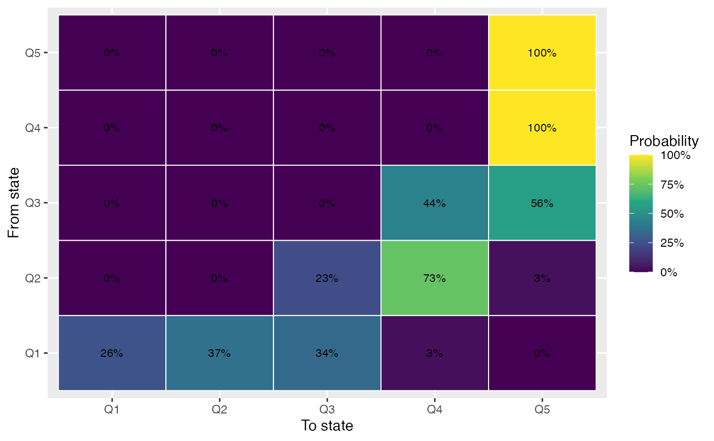
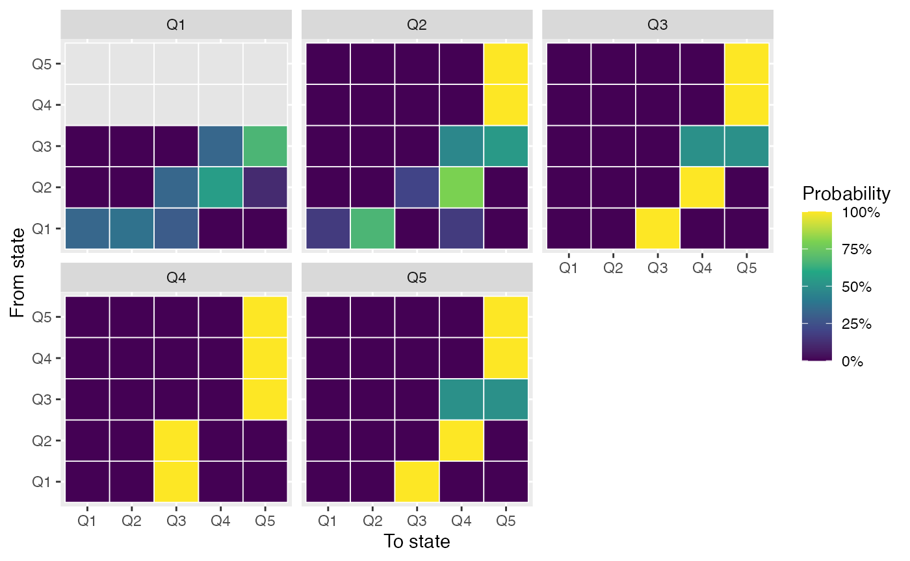

This article is a website-only template for Canadian Census workflows: it requires live CensusMapper access, so it is rendered on the pkgdown site when the API key is set and skipped otherwise. It does not ship with the installed package.
## Census data is currently stored temporarily.
##
## In order to speed up performance, reduce API quota usage, and reduce unnecessary network calls, please set up a persistent cache directory via `set_cancensus_cache_path('<local cache path>', install = TRUE)`.
## This will add your cache directory as environment varianble to your .Renviron to be used across sessions and projects.## Warning: package 'sf' was built under R version 4.5.2## Linking to GEOS 3.13.0, GDAL 3.8.5, PROJ 9.5.1; sf_use_s2() is TRUE## Loading required package: spData## To access larger datasets in this package, install the spDataLarge
## package with: `install.packages('spDataLarge',
## repos='https://nowosad.github.io/drat/', type='source')`
regions <- list(CSD = "5915022") # Vancouver CSD
vectors <- c(
income_2016 = "v_CA16_2397",
income_2021 = "v_CA21_906"
)
panel_2016 <- get_census(
dataset = "CA16",
regions = regions,
vectors = vectors["income_2016"],
level = "CT",
geo_format = "sf"
) |>
transmute(GeoUID, year = 2016L, median_income = income_2016, geometry)## Census data is currently stored temporarily.
##
## In order to speed up performance, reduce API quota usage, and reduce unnecessary network calls, please set up a persistent cache directory via `set_cancensus_cache_path('<local cache path>', install = TRUE)`.
## This will add your cache directory as environment varianble to your .Renviron to be used across sessions and projects.## Census data is currently stored temporarily.
##
## In order to speed up performance, reduce API quota usage, and reduce unnecessary network calls, please set up a persistent cache directory via `set_cancensus_cache_path('<local cache path>', install = TRUE)`.
## This will add your cache directory as environment varianble to your .Renviron to be used across sessions and projects.## Querying CensusMapper API...## Downloading: 2.4 kB Downloading: 2.4 kB Downloading: 2.4 kB Downloading: 2.4 kB## Census data is currently stored temporarily.
##
## In order to speed up performance, reduce API quota usage, and reduce unnecessary network calls, please set up a persistent cache directory via `set_cancensus_cache_path('<local cache path>', install = TRUE)`.
## This will add your cache directory as environment varianble to your .Renviron to be used across sessions and projects.
##
##
## Querying CensusMapper API...## Downloading: 12 kB Downloading: 12 kB Downloading: 23 kB Downloading: 23 kB Downloading: 23 kB Downloading: 23 kB
panel_2021 <- get_census(
dataset = "CA21",
regions = regions,
vectors = vectors["income_2021"],
level = "CT",
geo_format = "sf"
) |>
transmute(GeoUID, year = 2021L, median_income = income_2021, geometry)## Census data is currently stored temporarily.
##
## In order to speed up performance, reduce API quota usage, and reduce unnecessary network calls, please set up a persistent cache directory via `set_cancensus_cache_path('<local cache path>', install = TRUE)`.
## This will add your cache directory as environment varianble to your .Renviron to be used across sessions and projects.
##
##
## Querying CensusMapper API...## Downloading: 2.5 kB Downloading: 2.5 kB Downloading: 2.5 kB Downloading: 2.5 kB## Census data is currently stored temporarily.
##
## In order to speed up performance, reduce API quota usage, and reduce unnecessary network calls, please set up a persistent cache directory via `set_cancensus_cache_path('<local cache path>', install = TRUE)`.
## This will add your cache directory as environment varianble to your .Renviron to be used across sessions and projects.
##
##
## Querying CensusMapper API...## Downloading: 12 kB Downloading: 12 kB Downloading: 34 kB Downloading: 34 kB Downloading: 34 kB Downloading: 34 kB
common_ids <- intersect(panel_2016$GeoUID, panel_2021$GeoUID)
panel <- bind_rows(panel_2016, panel_2021) |>
filter(GeoUID %in% common_ids)
geography <- panel |> filter(year == 2021L) |> arrange(GeoUID)
listw <- nb2listw(poly2nb(geography, queen = TRUE), style = "W", zero.policy = TRUE)## Warning in poly2nb(geography, queen = TRUE): some observations have no neighbours;
## if this seems unexpected, try increasing the snap argument.## Warning in poly2nb(geography, queen = TRUE): neighbour object has 3 sub-graphs;
## if this sub-graph count seems unexpected, try increasing the snap argument.
classes <- classify_dynamics(panel, GeoUID, year, median_income, k = 5)
classic <- markov_dynamics(classes, GeoUID, year, class)
spatial <- spatial_markov(panel, GeoUID, year, median_income, listw = listw, k = 5)
plot_transition_matrix(classic)
plot_spatial_markov(spatial)
Canadian census geographies can change between cycles. A production workflow should harmonize geography before treating units as a longitudinal panel.